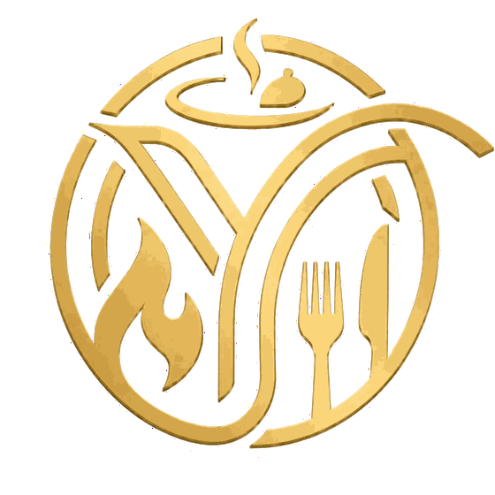
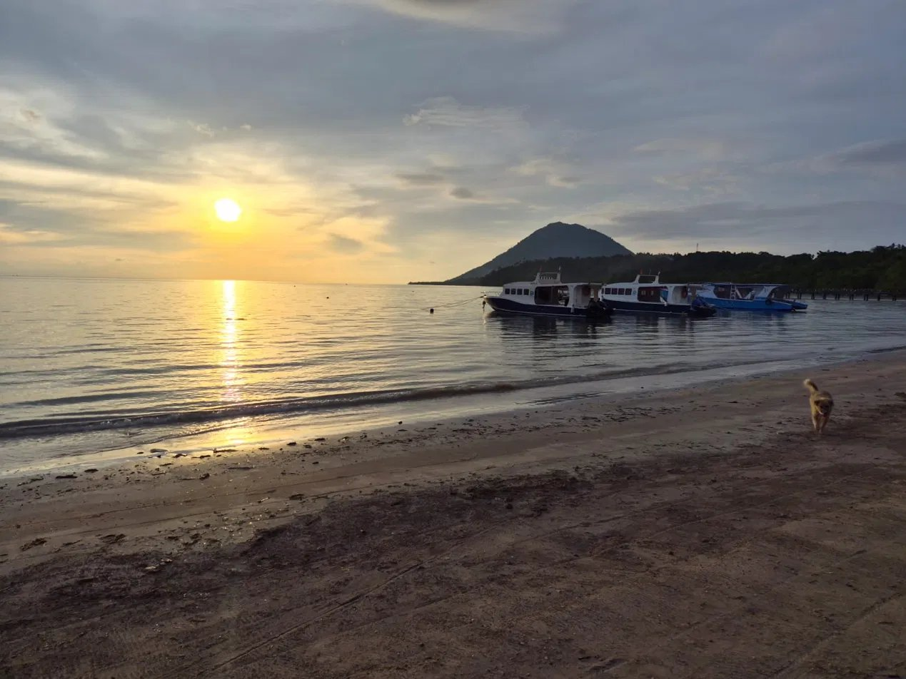
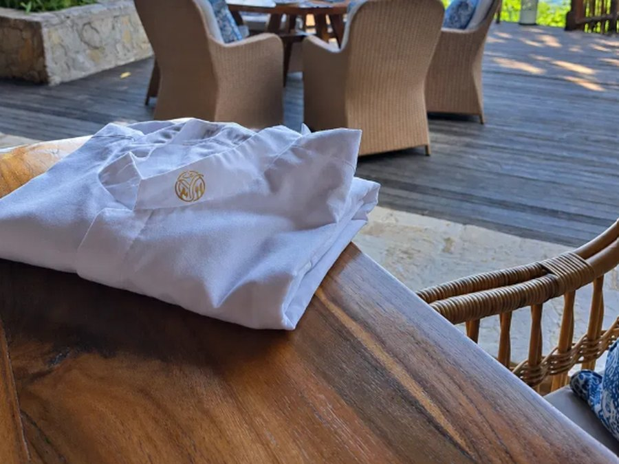
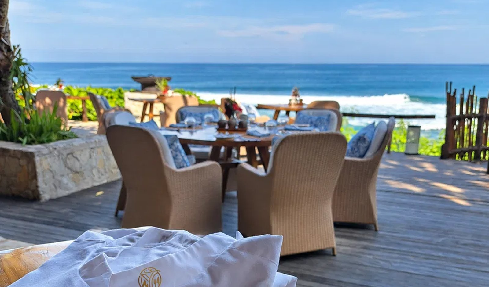

Yunic Hospitality Plan an Experience ↗Home · Experiences · N°02
Dive & Dine is built around a simple truth: the best diving days deserve equally good food. Not resort buffets, not packaged meals. Real food, made with care, that understands where you just came from.

The rhythm of the sea

We work with dive resorts, liveaboards and private yachts where food is part of the experience, not simply something served between dives.
What we do depends on the place. We look at what is available locally, how the kitchen works, who the guests are and what makes sense for the destination.
A Dive & Dine pop-up, new menus, chef training or longer-term culinary support, depending on what the resort needs.
Menus created for life at sea, for your crew to cook, or Yunic comes on board and cooks for your guests.
A Yunic chef and host on board for part or all of the journey, with the food created around the trip and the people travelling.

Beachside & on board
We don’t believe the same concept works everywhere.
Before we say yes, we want to understand the place, the people behind it and what you want to create. If we feel Yunic can bring something meaningful to it, we take it from there.
That could be one dinner, a one-week pop-up, a new menu, training your team or a longer collaboration.
There is no fixed formula. It starts with a conversation and seeing where it can go.